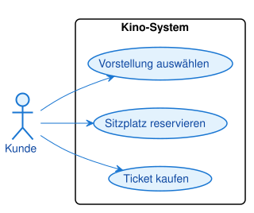

Aufgabe 1 [leicht]: Kino-Ticketkauf
Ein Kino-System soll für Kunden folgende Funktionen bieten: Eine Vorstellung auswählen, einen Sitzplatz reservieren und ein Ticket kaufen. Modellieren Sie den passenden Akteur, die drei Anwendungsfälle und die Systemgrenze.
Musterlösung

@startuml
left to right direction
actor Kunde
rectangle "Kino-System" {
usecase "Vorstellung auswählen" as UC1
usecase "Sitzplatz reservieren" as UC2
usecase "Ticket kaufen" as UC3
}
Kunde --> UC1
Kunde --> UC2
Kunde --> UC3
@enduml
Ein einziger Akteur "Kunde" nutzt alle drei Anwendungsfälle. Da es keine gemeinsamen Teilschritte
oder optionalen Erweiterungen gibt, reichen einfache Assoziationen aus — nicht jedes Diagramm
braucht «include» oder «extend».